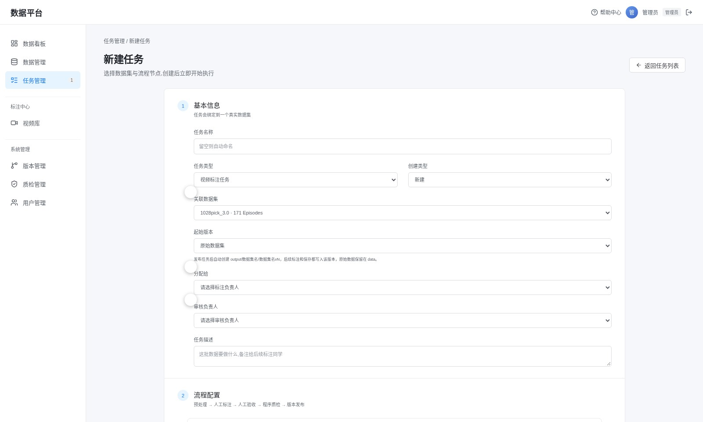

2. 新建标注任务
任务必须绑定一个真实数据集。创建时会自动在 output/数据集名/数据集名vN 建独立副本，之后所有标注只写副本，原始数据不动。
新建任务
- 任务管理 → 新建任务填写任务名称，任务类型选「视频标注任务」。
- 关联数据集选择要标注的数据集。要接着已有版本改，就在「起始版本」里选对应版本，否则从原始数据开始。
- 分配负责人标注负责人只能保存自己的任务；审核负责人负责验收。两个人可以是同一账号，生产环境建议分开。
- 写任务描述把标注要求写清楚，标注员打开任务就能看到。

创建后任务会自动执行「预处理」，然后停在「人工标注」等人处理，不会自动往下走。
任务详情与节点
详情页上半部分是任务信息和当前进度；下半部分列出五个节点，展开可以看到执行时间、耗时和产出。标注节点上有「进入工作区」按钮。

流程走偏了怎么办：管理员可以用「转回节点」把流程退回更早的节点重跑，需要填写原因，操作会记入执行事件